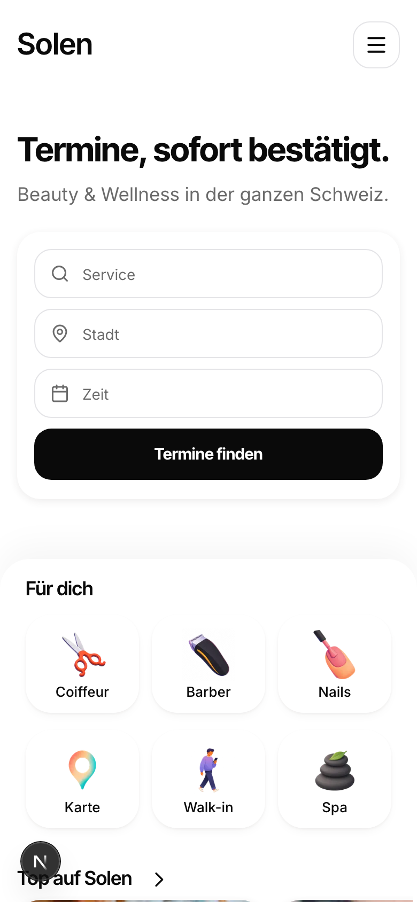
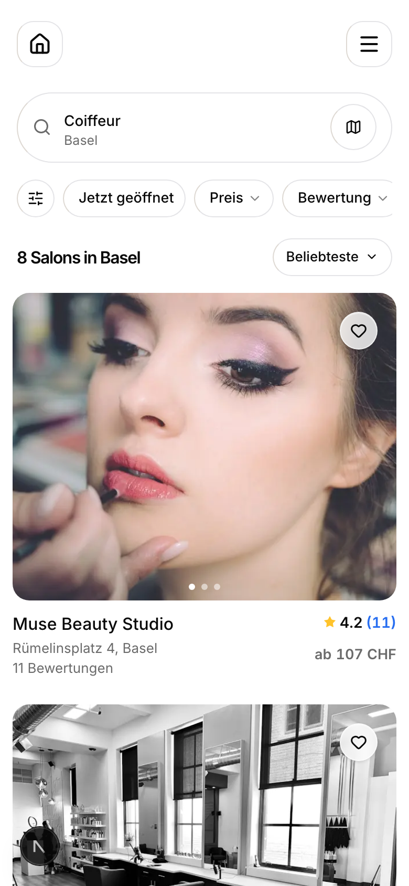
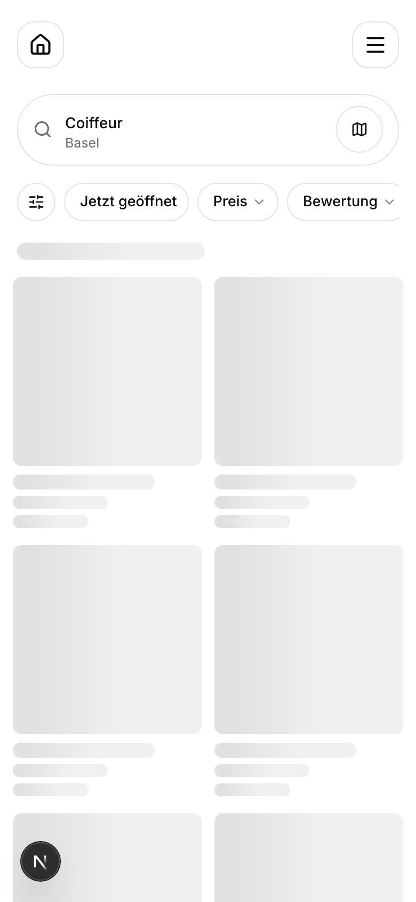
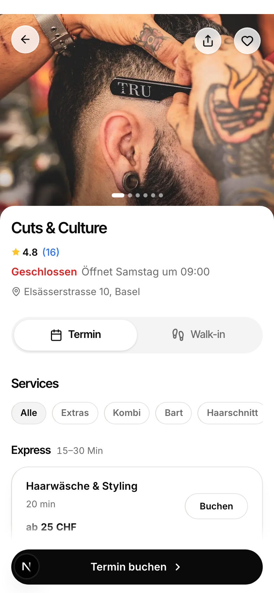
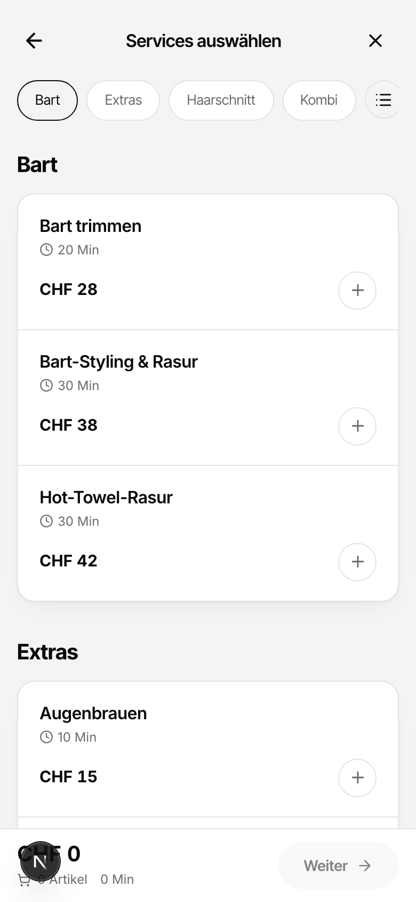
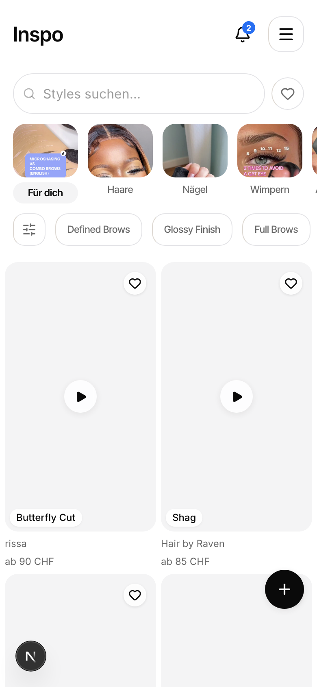
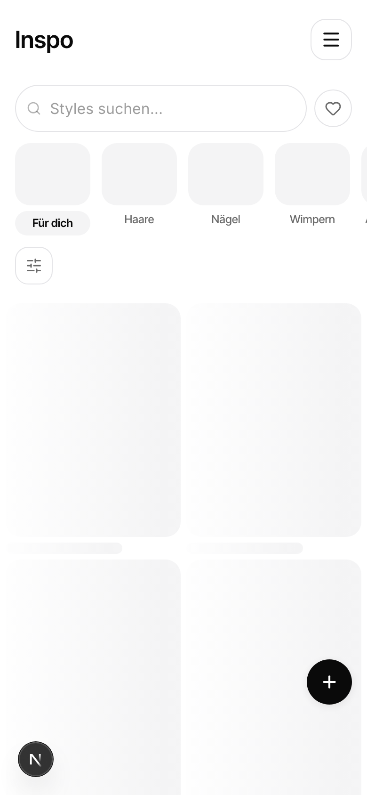
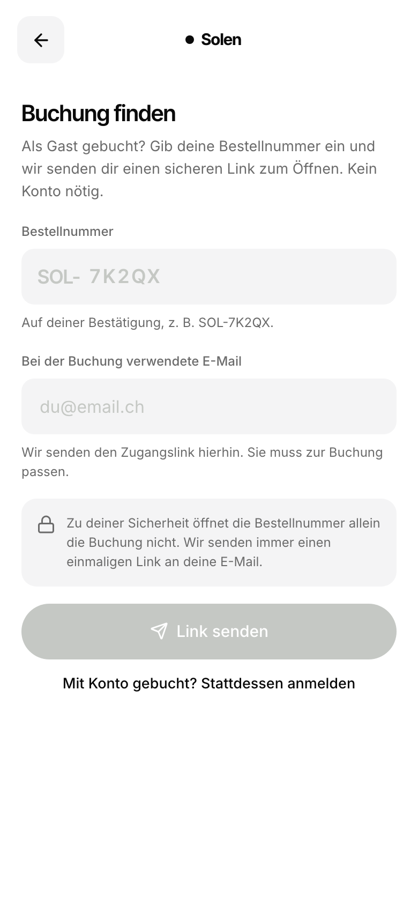
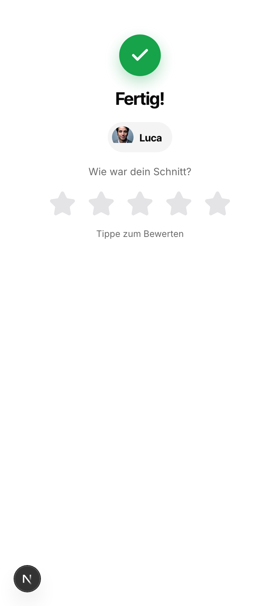
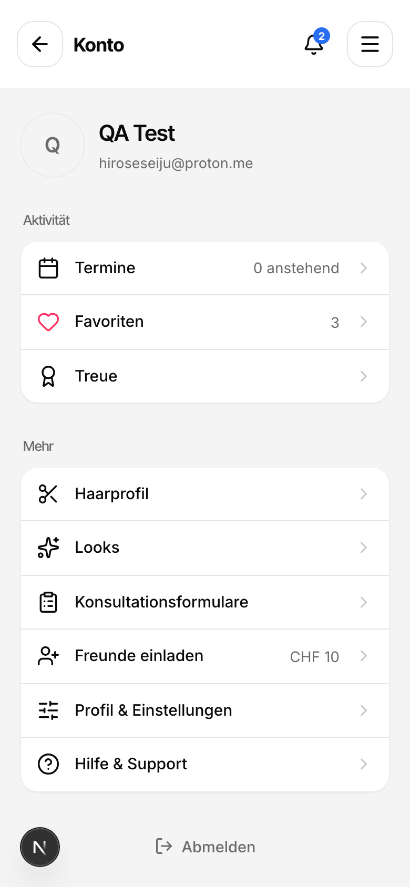

Customer-Overhaul, Welle 1
Acht Kern-Screens der Kundenreise, jeder live bei 390x844 aufgenommen und gegen das inzwischen festgelegte Zahlen-Gesetz gemessen (Rhythmus 32, Radius-Token, Haarlinie #E4E4E7, Auswahl = Grau statt Schwarz, Touch 44, Typo-Untergrenzen). Das rechte Frame ist dieselbe echte Seite mit nur den numerischen Regeln als Overlay, nichts neu gezeichnet. Blaue Badges sind mechanische Fixes, im After schon angewandt; orange Badges brauchen deine Entscheidung.
34gemessene Punkte
26numerische Fixes (angewandt)
8Geschmacks-Entscheidungen
6 / 8Screens mit der warmen Haarlinie #DED9D3
Homepage
/de 8 PunkteSektionsabstaende gemessen: 57, 16, 16, 16, 16, 16, 16 px
jetzt

nach dem Gesetz

RHYTHM
im After angewandt
Gemessen: every inter-section gap = 16px (getBoundingClientRect: 783->799, 1111->1127, 1600->1616, 1907->1923, 2307->2323, 2605->2621). Hero->first-section gap is 57px and is excluded per brief.
Soll: 32px between consecutive sections
change the section wrapper mb-4 (16px) to mb-8 (32px) on the content sections
RADIUS
im After angewandt
Gemessen: border-radius 6px on all three fields and on the 'Termine finden' CTA (rounded-[6px]); other CTAs on the page render pill (9999px): 'Suchen', 'Mehr erfahren'
Soll: input radius 16; button/CTA pill (or 16) - not 6px
raise the hero search field radius to 16px and the CTA to pill/16 to match the rest of the page
RADIUS
im After angewandt
Gemessen: walk-in cards render border-radius 13px; promo cluster renders 11px and 22px; category tiles ('Für dich', 106x92) render 24px - all off the 16 card standard
Soll: 16px on card/listing blocks
snap these card radii to 16 (rounded-card); consolidate the 11/13/22/24 values
HAIRLINE
im After angewandt
Gemessen: border color rgb(222,217,211) = #DED9D3 (warm gray, the retired warm hairline)
Soll: rgb(228,228,231) / #E4E4E7
replace the warm border color with border-s-border (#E4E4E7)
TOUCH TARGETS
im After angewandt
Gemessen: 20x20px tap target (smaller dimension 20px)
Soll: >= 44px
wrap each chevron link in a >=44px hit area (padding or h-11 w-11)
TOUCH TARGETS
im After angewandt
Gemessen: heights 33px (filter pills), 39px (reset), 38px (icon button) - all below 44
Soll: >= 44px height
raise these controls to h-11 (44px)
NO FABRICATED DATA
braucht deine Entscheidung
Gemessen: cards render a minute-range wait-until-free ('70-98 Min bis frei', '35-49 Min bis frei') on the home surface - same shape as the banned 'Frei in 15 Min'
Soll: either proven wired to real live queue/availability data, or removed
confirm the wait ranges are computed from live walk-in queue data; if hardcoded/seeded, remove the line and flag for wiring
Consistency
braucht deine Entscheidung
Gemessen: some review counts render blue rgb(39,110,241) ('(16)','(11)','(12)') while others render gray rgb(107,107,107) ('(25)','(8)','(7)') on the same screen
Soll: one consistent color for review counts across sections
pick one treatment (blue small-clickable or gray meta) and apply it to every review count
Suche (Basel · Coiffeur)
/de/basel/coiffeur 3 PunkteSektionsabstaende gemessen: 24, 24, 24, 24, 24 px
jetzt

nach dem Gesetz

RADIUS
im After angewandt
Gemessen: border-radius 20px (Tailwind arbitrary class rounded-[20px])
Soll: 16px (rounded-card token)
Replace rounded-[20px] with rounded-card (16px) on the search result card wrapper.
HAIRLINE
im After angewandt
Gemessen: 1px border-left color rgb(222,217,211) = #DED9D3 (warm) on ~12 border sides across the page; the other 41 border sides are correctly rgb(228,228,231)
Soll: rgb(228,228,231) #E4E4E7 on every 1px hairline side
Snap the leaking warm border color (#DED9D3) to the cool s-border token #E4E4E7; check for a stray border-l override or a mis-defined token on the header icon buttons and the card wrapper.
TYPE FLOORS
braucht deine Entscheidung
Gemessen: font-size 18px, font-weight 500
Soll: ~14 per the locked text-size contract (name 14)
This deviates upward from the locked name=14; it is larger/more prominent (not a readability breach) and name still leads by size over the price, so it is a taste call: keep 18px as an intentional larger search-card title, or snap to the locked 14. Needs an owner decision, not an auto-snap.
Salon-Seite
/de/salon/cuts-and-culture 6 PunkteSektionsabstaende gemessen: 222, 40, 40, 40, 40, 40, 40, 40, 40, 40, 40, 0 px
jetzt

nach dem Gesetz
RHYTHM
im After angewandt
Gemessen: 40px between all 10 consecutive content sections (section bottoms->next tops: 1351->1391, 1593->1633, 1821->1861, 2128->2168, 3480->3520, 3794->3834, 3894->3934, 4210->4250, 4505->4545, 4675->4715 all = 40)
Soll: 32px
reduce the vertical section gap from 40 to 32 (e.g. the space-y / mt utility driving inter-section spacing)
HAIRLINE
im After angewandt
Gemessen: border color rgb(222,217,211) = #DED9D3 (warm gray) on 22 elements
Soll: rgb(228,228,231) = #E4E4E7 (cool neutral)
replace the warm #DED9D3 border token with border-s-border #E4E4E7; this is the retired warm hairline (V3-D447) that the cool v2 rule superseded
TOUCH TARGET
im After angewandt
Gemessen: height = 32px
Soll: >=44px
raise chip height to 44 (h-11) or add vertical padding to reach a 44px hit area
TOUCH TARGET + CTA TYPE FLOOR
im After angewandt
Gemessen: height = 38px, text font-size = 13px, weight 600
Soll: height >=44px; button text >=15 (never <=13)
grow the Buchen button to a 44px hit area and lift its label to >=15px (the sticky primary "Termin buchen" is correct at 15px ink #0A0A0A)
TOUCH TARGET
im After angewandt
Gemessen: 40x40px (h-10 w-10)
Soll: >=44px
bump the frosted icon buttons from 40 to 44 (h-11 w-11)
RADIUS
im After angewandt
Gemessen: border-radius = 10px
Soll: 16px
change the product-tile radius from rounded-[10px] to rounded-card (16)
Buchung · Services
/de/salon/cuts-and-culture/booking 6 PunkteSektionsabstaende gemessen: 32, 32, 32 px
jetzt

nach dem Gesetz

SELECTED / ACTIVE state + FILTERS ARE NEUTRAL
im After angewandt
Gemessen: background-color: rgb(10, 10, 10) (ink black) + color: rgb(255,255,255) white text
Soll: background-color: rgb(244,244,245) #F4F4F5 (gray sunken) + text-s-ink rgb(10,10,10) + semibold; white unselected pills stay as-is
Swap the selected-pill fill from bg-s-ink to bg-s-bg-sunken with text-s-ink; this is the locked TabPill selected treatment.
TOUCH TARGETS
im After angewandt
Gemessen: 36 x 36 px (w-9 h-9)
Soll: >= 44 x 44 px (h-11 w-11)
Bump the add-service tap target from w-9 h-9 (36px) to h-11 w-11 (44px), keeping the visible ring size if desired via inner padding.
TOUCH TARGETS
im After angewandt
Gemessen: back button 40x40; category pills height 38; Kategorien button 36x36 — all below 44
Soll: >= 44px smaller dimension (back/Kategorien to 44x44; pills to h-11 / 44px height)
Raise the back icon-button and the Kategorien button to 44x44 and the category pills to 44px height.
HAIRLINE
im After angewandt
Gemessen: border color rgb(222, 217, 211) = #DED9D3 (warm gray) on 19 elements; the rest of the page correctly uses rgb(228,228,231) on 65 borders
Soll: border-color rgb(228,228,231) #E4E4E7 on all 1px hairlines
These components resolve their border to warm #DED9D3 instead of the cool border-s-border token; point them at border-s-border (#E4E4E7).
TYPE FLOORS
im After angewandt
Gemessen: font-size: 14px
Soll: font-size: >= 15px
Raise the Weiter CTA label to 15px (text-[15px] / CTA text token).
RADIUS
im After angewandt
Gemessen: border-radius: 24px (rounded-[24px])
Soll: 16px (rounded-card) — 28 is reserved for bottom sheets
Change the service-card container radius from rounded-[24px] to rounded-card (16px).
Inspo-Feed
/de/inspo 4 Punktejetzt

nach dem Gesetz

HAIRLINE
im After angewandt
Gemessen: border-color rgb(222,217,211) = #DED9D3 (warm) on 14 elements; meanwhile the search bar wrapper correctly uses rgb(228,228,231)
Soll: rgb(228,228,231) / #E4E4E7 (cool neutral) on every hairline
Snap the chip + icon-button + location-button border token from the warm #DED9D3 to border-s-border #E4E4E7; the warm hue was explicitly reversed (V3-D447 -> cool). The search bar already proves the cool token is available on this screen.
TOUCH TARGETS
im After angewandt
Gemessen: smaller dimension 40px on the icon buttons, bell, and all filter chips (h-10 = 40); the wordmark link 'Inspo' is 25px tall
Soll: >= 44px (h-11)
Bump the h-10 icon buttons, the notification bell, and the filter chips to h-11 (44px). The hamburger is already correct at 44x44, so the fix is matching the rest to it.
BLUE RESTRAINT
braucht deine Entscheidung
Gemessen: background rgb(39,110,241) = #276EF1, 16x16px, border-radius 9999px, white 10px text
Soll: Blue is reserved for text links / chip / review-count TEXT. A filled blue count pip reads as a colored status pip (rule 2). If a count badge is wanted, use a semantic hue (this is a notification alert, closer to red #DC2626) or a neutral ink pip, not the interactive-blue.
Re-hue the badge fill off #276EF1; also confirm the '2' is wired to a live notification count (could not verify data backing from the client) — a hardcoded count would be fabricated data.
RADIUS
braucht deine Entscheidung
Gemessen: border-radius 16px (rounded-card) on 40px-tall chips
Soll: chips fully rounded (>= 99px pill) per the radius law; the search input above them is correctly 9999px
If these are meant to read as pills/chips, snap the radius to rounded-full; if they are intentionally rounded-card Fresha-style tags, this is a documented deviation. Flagging because the literal radius law wants chips at full-pill and the value sits at the card radius instead.
Buchung finden
/de/booking/lookup 3 Punktejetzt

Nur gemessen (siehe Liste rechts). Fixes sind mechanisch, aber ohne eigenes After-Render.
Locked disabled treatment + cool-neutral palette
braucht deine Entscheidung
Gemessen: bg/color rgb(197,200,196) (#C5C8C4), a warm sage-grey (G highest, B lowest), opacity 1
Soll: Locked disabled = opacity-50 on the ink fill (visually ~rgb(132,132,132)); any grey should be a cool neutral, not a green-tinted sage in an #E4E4E7/#F4F4F5 cool system
Render the disabled CTA as the ink button at opacity-50 (cursor-not-allowed) per the locked contract, and use a cool neutral grey for the 'SOL-' prefix, instead of the off-palette sage rgb(197,200,196)
Type floor
im After angewandt
Gemessen: font-size 13.5px
Soll: 14px body floor
Bump these body/description strings from 13.5px to 14px (meta stays 12px)
Consistency of the two fixed fields
braucht deine Entscheidung
Gemessen: code input font-size 18px, email input font-size 16px (both height 52, radius 12, bg #F4F4F5 now match)
Soll: box geometry matches after the fix; font-size intentionally differs or should be unified
Confirm the 18px vs 16px input font-size difference is intentional (code emphasized) or unify to one value; both already >=14 so no floor is broken
Walk-in-Tracker
/de/queue/0631e9bd-47f2-4ac4-a06b-de40ab149528 0 Punktejetzt

sauber
Keine Verletzungen gemessen. Dieser Screen erfuellt das Gesetz bereits.
Keine Verletzungen gemessen. Dieser Screen ist sauber.
Profil
/de/profile 4 PunkteSektionsabstaende gemessen: 45, 32 px
jetzt
nach dem Gesetz

HAIRLINE
im After angewandt
Gemessen: border-left-color = rgb(222,217,211) = #DED9D3 (warm), while top/right/bottom borders are the correct rgb(228,228,231). One side uses the retired warm hairline.
Soll: All four borders rgb(228,228,231) #E4E4E7 (cool). The warm #DED9D3 token was reversed by CLAUDE.md hairline rule.
Replace the stray warm border-l token on the header icon buttons with border-s-border (#E4E4E7) so all four sides match.
TOUCH TARGETS
im After angewandt
Gemessen: 40 x 40 px (smaller dimension 40)
Soll: >= 44 px. The adjacent back and hamburger icon buttons are correctly 44x44.
Bump the bell link tap target to h-11 w-11 (44px) to match the sibling icon buttons and clear the 44px a11y floor.
TYPE FLOORS
braucht deine Entscheidung
Gemessen: font-size 13px, weight 500, color rgb(107,107,107) grey
Soll: Either a section H2 at 18-20px, or an eyebrow at 11px. 13px sits between the two floors.
Human taste call: these read as iOS-settings grouped-list captions, which is a legitimate pattern, but they are semantically <h2> at 13px, matching neither the H2 (18-20) nor the eyebrow (11) floor. Decide whether they are section headings (raise to 18-20) or eyebrow captions (drop to 11).
TYPE FLOORS
im After angewandt
Gemessen: font-size 14.5px
Soll: >= 15px per the button-text floor (it clears the <=13 hard floor, but is below 15).
Snap the Abmelden label to 15px. Low priority since it is a tertiary/destructive text action, not a primary CTA.